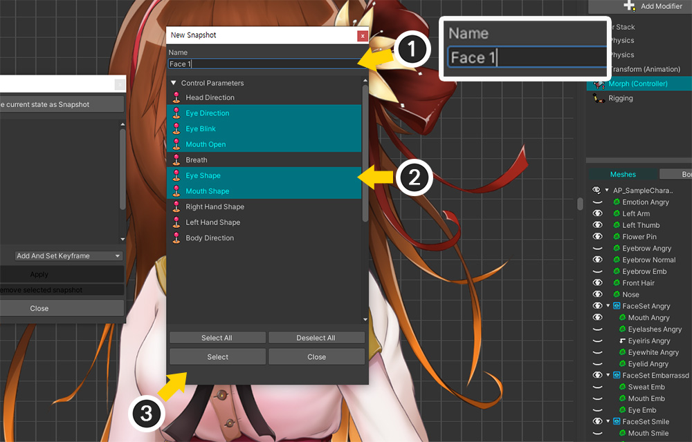
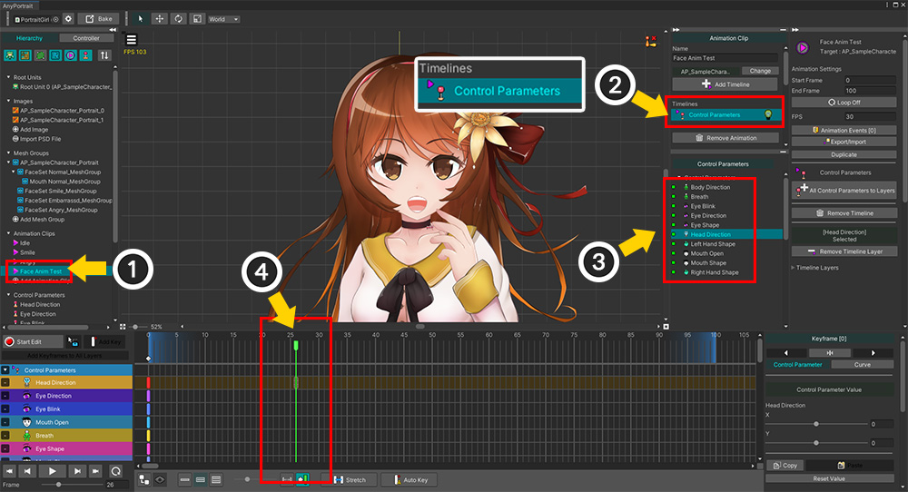

AnyPortrait > 메뉴얼 > 컨트롤 파라미터 스냅샷
컨트롤 파라미터 스냅샷
1.5.0
많은 수의 컨트롤 파라미터를 생성하여 작업을 할 때, 컨트롤 파라미터들의 특정 상태를 저장하면 작업이 편리해질 수 있습니다.
컨트롤 파라미터들을 저장해둔 값으로 변경하여 미리보기를 하거나, 키프레임에 적용하는 "스냅샷" 기능을 사용해봅시다.
스냅샷 만들기

(1) 많은 수의 컨트롤 파라미터들이 생성되어 있는 캐릭터입니다. 컨트롤 파라미터들을 조절하여 저장하고자 하는 상태를 만듭니다.

(1) Controller 탭이 선택되어있는지 확인합니다.
(2) Snapshot 버튼을 누릅니다.
(3) 컨트롤 파라미터 스냅샷을 저장하거나 적용하는 다이얼로그가 나옵니다.
(4) Save current state as Snapshot 버튼을 누릅니다.

현재의 컨트롤 파라미터의 상태를 스냅샷으로 저장하는 다이얼로그가 나옵니다.
이 다이얼로그의 항목들은 다음과 같습니다.
1. 스냅샷의 이름을 설정합니다.
2. 저장할 컨트롤 파라미터들을 선택합니다.
3. 모든 컨트롤 파라미터들을 선택하거나 선택을 해제합니다.
4. 저장을 하거나 취소합니다.

(1) 스냅샷의 이름을 설정합니다.
(2) 저장할 컨트롤 파라미터들을 선택합니다. Ctrl 이나 Shift 를 눌러서 다중 선택을 할 수 있습니다. Select All이나 Deselect All 버튼을 눌러서 선택할 수 있습니다.
(3) 선택이 완료되었다면 Select 버튼을 누릅니다. 취소시 Close 버튼을 누릅니다.

생성된 스냅샷이 리스트에 추가된 것을 볼 수 있습니다.
참고
스냅샷을 삭제하려면, 삭제하고자 하는 스냅샷을 선택한 후 Remove selected snapshot 버튼을 누르세요.
스냅샷을 적용하기
저장된 스냅샷을 적용하여 컨트롤 파라미터들의 값을 일괄 변경해봅시다.
컨트롤 파라미터 스냅샷 기능은 컨트롤 파라미터를 사용할 수 있는 모든 상황에서 사용이 가능하지만, 여기서는 Morph (Controller) 모디파이어를 사용하는 상황을 가정해서 설명합니다.

(1) Morph (Controller) 모디파이어가 선택된 상태입니다.
(2) Snapshot 버튼을 누릅니다.
(3) 저장된 스냅샷을 선택합니다.

(1) Apply 버튼을 누릅니다.
(2) 컨트롤 파라미터가 스냅샷의 값으로 변경이 되면서 캐릭터의 모습이 바뀌었습니다.
스냅샷을 적용하면서 키프레임 생성하기
애니메이션의 경우는 스냅샷으로 저장된 컨트롤 파라미터의 값을 키프레임으로 생성하고 적용할 수 있습니다.

(1) 애니메이션 클립을 선택합니다.
(2) Control Parameters 타임라인을 추가합니다.
(3) 대상이 되는 컨트롤 파라미터들을 타임라인에 등록합니다.
(4) 스냅샷을 적용할 위치로 타임 슬라이더를 옮깁니다.

(1) Controller 탭을 선택합니다.
(2) Snapshot 버튼을 누릅니다.
(3) 적용할 스냅샷을 선택합니다.
(4) Method의 값을 Add And Set Keyframe으로 변경합니다.
(5) Apply 버튼을 누릅니다.
참고
- Preview 옵션은 컨트롤 파라미터의 값을 변경하되 키프레임에 적용하지 않습니다.
- 컨트롤 파라미터가 타임라인 레이어로 등록되지 않았다면 스냅샷이 적용되지 않습니다.

(1) 스냅샷에 저장되었던 컨트롤 파라미터의 레이어에 키프레임들이 생성되었습니다.
(2) 스냅샷이 키프레임에 적용되어 캐릭터의 모습이 바뀐 것을 볼 수 있습니다.